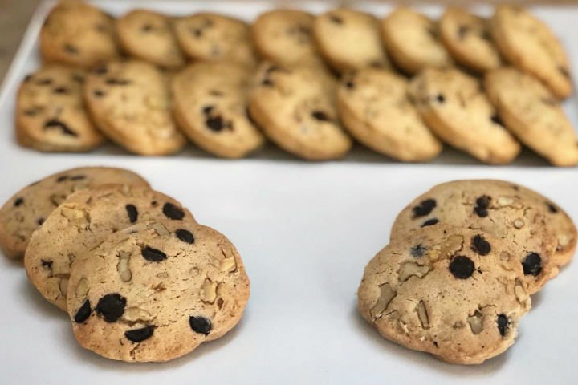

Kahvenin Yanına En Çok Yakışan:
Starbucks Kurabiyesi Tarifi

Malzemeler
- 2 adet yumurta sarısı
- 150 gram tereyağ/margarin
- 100 gram pudra şekeri
- 2 çorba kaşığı su
- 1 tatlı kaşığı vanilya
- 1 tatlı kaşığı kabartma tozu
- 1 tatlı kaşığı tarçın
- 300 gram un
- 50 gram damla çikolata
- 100 gram iri çekilmiş ceviz
Yapılışı
- Şeker ve yumurta sarıları bir kapta çırpılır.
- Oda sıcaklığındaki tereyağı, su ve vanilya eklenerek karıştırmaya devam edilir.
- Kabartma tozu ve tarçın eklenerek hafifçe karıştırılır.
- Elenmiş olan unu ekleyerek hamur yoğurulur.Hamurunuz ele yapışmayan ve şekli bozulmayacak kıvamda olmalıdır.
- Yoğurma işlemi tamamen bittiğinde damla çikolata ve ceviz eklenir. Malzemeler hamura iyice karıştırılır.
- Çikolatalar eklendikten sonra fazla yoğurulursa çikolatalar erimeye başlayacak ve şekil vermek zorlaşacaktır.
- Hamur ikiye bölünür. 5-6 cm çapında silindir haline getirilir ve 30 dakika buzdolabında bekletilir.
- Buzdolabından çıkan hamur 3 cm genişliğinde kesilir ve yağlı kağıt serilmiş olan tepsiye dizilir.
- Önceden ısıtılmış 160 derece fırının fanlı ayarında 12 dakika pişirilir.Kurabiye fırından çıktığında yumuşak olacak, soğuduktan sonra dışı çıtır içi yumuşak kalacaktır.
Afiyetler olsun.